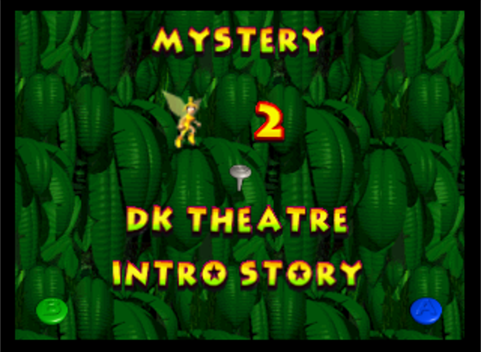
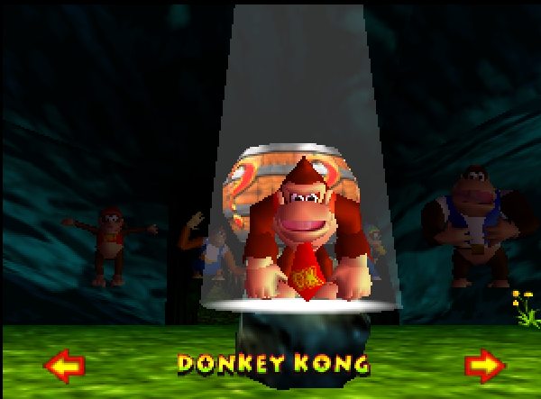
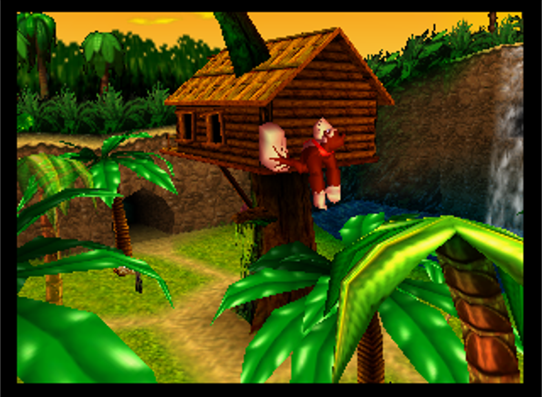
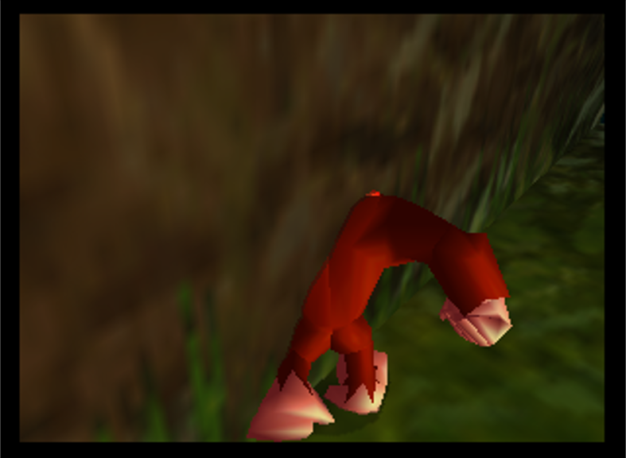
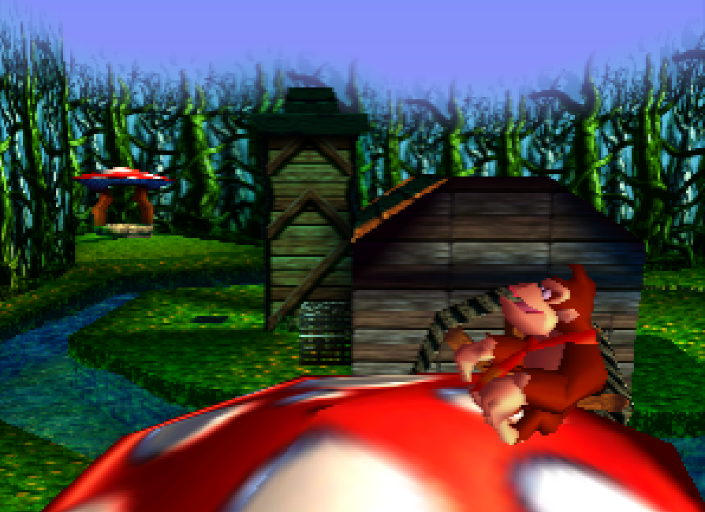

INTRO STORY GLITCH

Intro Story Glitch is a small break in the game's code which enables
the Intro Story to run in the background. Whilst small, this enables a
whole host of glitches such as memory manipulation to write moves to
a file, copying file properties over to another and 'Flashback Warping'.
A detailed YouTube Channel has also been created (IntroStoryGlitch)
documenting most of the quirks with Intro Story Glitch.

Tag Barrel storage is a trick where you have control of both the Tag Barrel and the
kong inside at the same time. With this, you can tag kongs in unintended
situations along with abusing stored positions to telegrab and warp to stored positions.
MOONKICKS

Moonkicking is a trick which enables you to gain a lot of additional
height and distance from a regular kick. Whilst requiring DK to initiate
a moonkick, it can be used in a lot of situations to bypass puzzles
or clip out of bounds.
SWIM THROUGH WALLS & PHASING

On the US release of DK64, there is a mathematical error after exiting first
person when looking in a certain direction. This puts you in a state where
you can clip through walls which are also angled in a particular direction.
This state can only be preserved via falling, alternating between forward
& neutral every frame, or swimming without changing direction.
LAG ABUSE
Donkey Kong 64 is a very laggy game, and the developers knew this.
As a way to make the game appear less laggy, an algorithm was introduced to
increase the kong's speed (per visual frame). Therefore, we can abuse this system
and purposefully generating lag to make the kong move faster to bypass collision
detection.
On N64, this makes it possible to clip out of bounds in a large proportion of maps.
SKEW

Intro Story Glitch is a small break in the game's code which enables
the Intro Story to run in the background. Whilst small, this enables a
whole host of glitches such as memory manipulation to write moves to
a file, copying file properties over to another and 'Flashback Warping'.
A detailed YouTube Channel has also been created (IntroStoryGlitch)
documenting most of the quirks with Intro Story Glitch.
Intro Story Glitch is a small break in the game's code which enables
the Intro Story to run in the background. Whilst small, this enables a
whole host of glitches such as memory manipulation to write moves to
a file, copying file properties over to another and 'Flashback Warping'.
A detailed YouTube Channel has also been created (IntroStoryGlitch)
documenting most of the quirks with Intro Story Glitch.